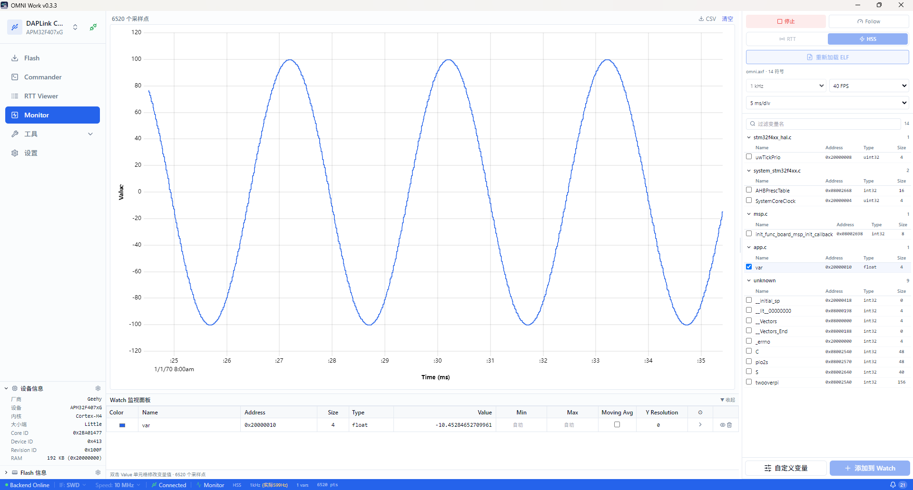

Monitor¶
Monitor 页面提供变量实时监控与波形采样，对标 SEGGER J-Scope。

界面布局¶
中央波形图基于 uPlot 渲染，纵轴为变量值、横轴为时间，网格线辅助读数，顶部标注当前采样点数。右侧面板分为可视化控制区（暂停/开始、缩放范围、刷新频率、Y 轴、过滤设置）与变量树。变量树按源文件分组，勾选复选框即可将变量加入监视。底部 Watch 表格实时显示变量名称、颜色标识、地址、类型、当前值、最小/最大值、移动均值等列。
加载 ELF 文件¶
Monitor 通过 DWARF 调试信息自动从 ELF 文件提取变量地址。进入 Monitor 页面后，点击右侧变量树顶部的加载按钮选择 ELF 文件。加载成功后，变量树按源文件分组展示所有全局变量与静态变量。
仅支持包含 DWARF 调试信息的 ELF 文件（编译时需加 -g 选项）。 stripped 二进制文件无法解析变量地址。
选择变量¶
变量树按源文件分组（如 main.c、system_stm32f4xx.c、app.c），展开文件节点后勾选变量复选框，变量即加入波形图与底部 Watch 表格。每个变量自动分配一种颜色，波形图与表格中的颜色一致。
取消勾选则从波形图移除该变量曲线。
SWD 模式（HSS）¶
SWD 模式使用 HSS（High-Speed Sampling）异步采样，通过 SWD 周期性读取内存，非侵入目标程序运行。适合长期监控、不希望影响目标时序的场景。
右侧可视化控制区设置采样频率（如 10 Hz、100 Hz、1 kHz）。实际采样率受 SWD 带宽限制，高频采样时实际速率可能低于标称值。
RTT 模式¶
RTT 模式为侵入式高速采样，目标程序主动推送数据到 RTT 通道，适合高频采样场景。使用 RTT 模式需要在目标程序中集成数据推送代码，将待监控变量的值按约定格式写入 RTT 通道。
RTT 模式采样率远高于 SWD 模式，但会占用目标 CPU 时间与 RTT 带宽。
触发设置¶
触发功能在满足条件时自动暂停波形滚动，便于捕捉特定事件：
- 上升沿 — 变量值从低于阈值上升到高于阈值时触发
- 下降沿 — 变量值从高于阈值下降到低于阈值时触发
- 阈值 — 变量值跨越指定阈值时触发
在右侧触发设置区选择触发变量、触发类型与阈值。触发后波形冻结，可使用游标测量细节。
游标测量¶
在波形图上点击或拖拽可放置游标。游标之间的时间差与变量值差自动显示在游标标签中。多游标模式下可测量任意两点间的变化量。
CSV 导出¶
点击波形图工具栏的导出按钮，将当前采样数据导出为 CSV 文件。每列为一个变量，每行为一个采样点，首行为变量名。CSV 可用 Excel、Python pandas 等工具二次分析。
Monitor 采样与 Flash 操作互斥。执行 Flash 烧录或擦除时，Monitor 自动暂停采样；Flash 操作完成后自动恢复。